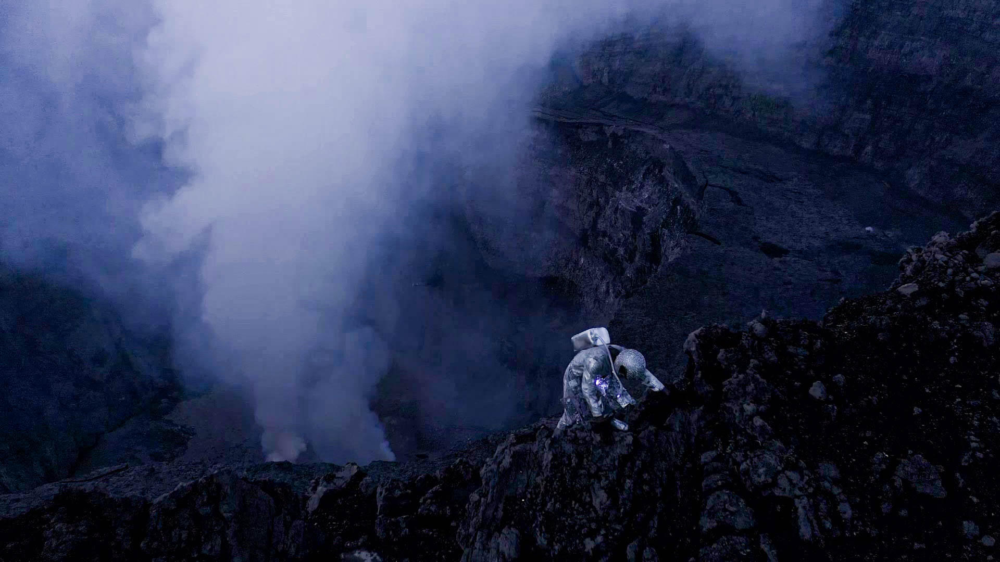

Mulika
An ‘afronaut’ emerges from the wreckage of his spaceship in the volcanic crater of Mount Nyiragongo. As he descends into the city below, encountering the people of present-day Goma, he begins to understand what he must do to change the future for his people.
Details
- Director / WriterMaisha Maene
- Producer / EditorLeo Nelki
- CastSefu Weber-kal, Faustin Biyoga, Ibrahim Twaha, Sarah Bahati
- Original ScoreDon Zilla, Jack Moran
- Music (Club Scene)Eza Makambo by Rey Sapienz and the Congo Techno Ensemble
- Director of PhotographyTD Jack Muhindo
- 2nd CameraEli Maene
- Assistant DOPJustin Kasereka
- Drone OperatorChris Horsley
- 2nd Drone OperatorMichel Lunanga
- Costume DesignerIsaac Bahati
- Sound RecordistTavis Kakule Muhesi
- Voiceover TextKoko Kabamba
- TranslationEliora Henzler
- ColouristValerio Morini
- In partnership withTrust Merchant Bank, DRC
- Supported byTerry Duffy Art Foundation, BADA Projects
- ThanksRobert Levy, Terry Duffy, Max Nelki Gopfert, Bazirake Maene Pascal, Denise Ngende, Chris Horsley, Nyege Nyege Tapes, BBOXX DRC, Uhuru Film Company, Bomoyi Art Center, Lac Kivu Lodge
- Filmed on location inGoma, DRC
Awards
- Locarno Film Festival (Winner: Medien Patent Verwaltung AG Award)
- Dresden Short Film Festival (Winner: Golden Horseman for Sound Design)
- Fickin International Film Festival Kinshasa (Winner: Best Film & Best Image)
- Drunken Film Fest Oakland (Winner: Best World Narrative)
Screenings
- Sundance Film Festival, USA
- Locarno Film Festival, Switzerland
- FESPACO, Burkina Faso
- Clermont-Ferrand Short Film Festival, France
- Palm Springs International Shortfest, USA
- Aspen ShortFest, USA
- Tampere Film Festival, Finland
- London Short Film Festival, UK
- Encounters Short Film Festival, UK
- Seattle International Film Festival, USA
- Helsinki International Film Festival Love & Anarchy, Finland
- Internationale Kurzfilmtage Winterthur, Switzerland
- Dresden International Short Film Festival, Germany
- Aesthetica Short Film Festival, UK
- RIDM, Canada
- DOXA Documentary Film Festival, Canada